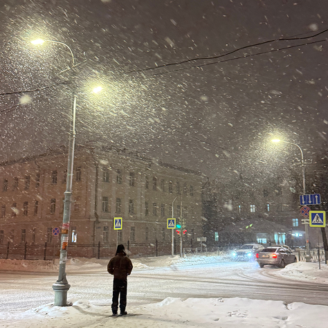

">
1/3
Так красиво сегодня на улице! Настоящая зима)) Вспоминается Бродский: «Поздно ночью, в уснувшей долине, на самом дне, в городке, занесенном снегом по ручку двери...»
...ещё2 часа назад
Лиза Дёмина